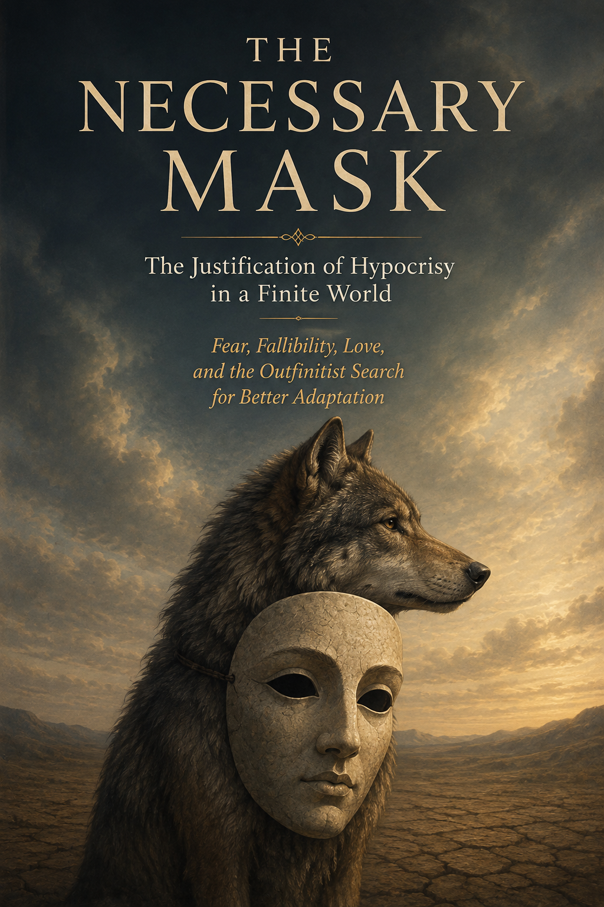

Philosophy · Axiologic Research Editions
The Necessary Mask
The Justification of Hypocrisy in a Finite World
Between the ideal and the animal, almost everyone wears something.
The distance between the ideal and the animal
The Necessary Mask begins by refusing an easy catalogue of other people’s contradictions. Most serious lives contain a gap between what someone affirms and what they can consistently enact: people value truth and use discretion; equality and hierarchy; freedom and the temporary constraint needed to raise children; universal concern and partial love. Some gaps are frauds. Others are tragedies, developmental stages, protections of privacy or negotiations between incompatible duties.
That distinction is the book’s work. It describes hypocrisy as a recurring adaptation to limited knowledge, fear, divided motives, scarcity, unequal power and institutions that demand more consistency than human beings can immediately supply. This does not absolve deception. It asks two disciplined questions: what function does this mask perform, and can that function be kept while its asymmetry, deception or transferred harm is reduced?
What the mask is hiding
Is hypocrisy always worse than cynicism? No. A person who fails a valid norm while accepting it is not morally identical to someone who openly denies the weak any claim. Aspirations can create leverage for reform.
When does a mask become predation? When standards are weaponised against others while permanent exceptions protect the speaker; when a delay of truth serves dependency rather than care; when an institution uses ideals as reputational camouflage.
What is a realistic reform? Classify the limit first, biological, cognitive, institutional, technological or constructed by power, then design psychological and institutional tools that narrow the gap without lowering the ideal.
The right response to imperfect conduct is not always to lower the standard to fit it.
The danger of clean hands
This is a provocative but careful alternative to both moral purism and casual excuse-making. It moves through fear, love, children, political hypocrisy and organisational life to make a difficult claim usable: integrity is not achieved by pretending our motives are clean. It is achieved by identifying which compromises protect a finite human life and which preserve domination. For readers of ethics, management and politics, that is a much more demanding standard than public consistency.